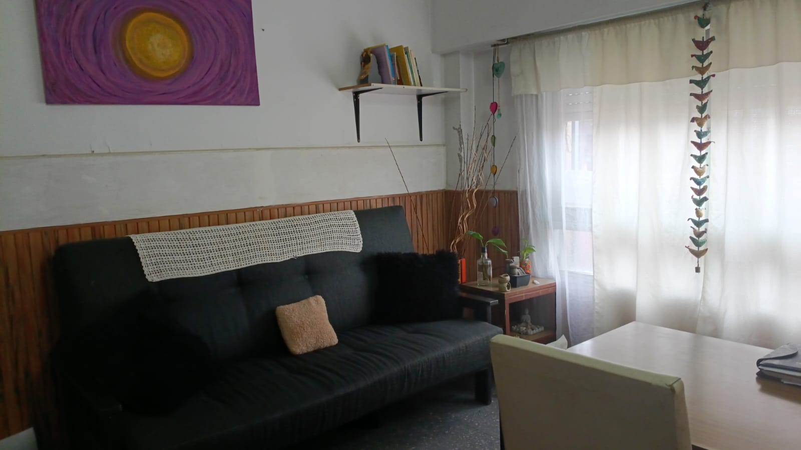
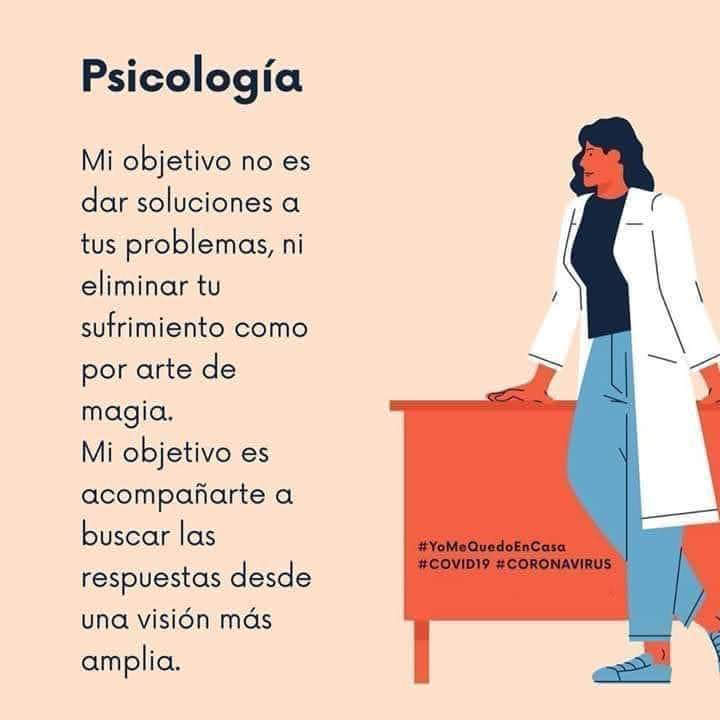

Acompañamiento psicoterapéutico para personas que estén atravesando crisis de ansiedad, conflictos vinculares y proceso complejos. Psicóloga clínica, atención virtual y presencial en la ciudad de rosario
Rosario · Av. Arijon 2050 · También por videoconsulta

“Estoy para acompañarte en un proceso de deconstrucción, construcción y búsqueda constante, adaptado a lo que vayas necesitando.”
— Lic. Elva B. Schweizer
Soy psicóloga clínica y creo profundamente en el poder transformador de un vínculo terapéutico genuino. Mi trabajo está centrado en el aquí y ahora: en lo que sentís hoy, en lo que te pesa, en lo que querés cambiar. No hay fórmulas mágicas, pero sí hay un espacio seguro donde todo puede decirse.
Me formo permanentemente para acompañar a mis pacientes con las mejores herramientas disponibles, siempre desde la escucha activa y el respeto por la singularidad de cada persona. Trabajo con adultos, en modalidad presencial desde mi consultorio en Rosario y a través de videoconsultas.

Un acompañamiento especializado en salud mental, orientado a tu bienestar integral.
Atención psicológica individual para adultos. Un espacio de escucha, reflexión y crecimiento personal adaptado a tus necesidades.
Evaluaciones e informes técnicos especializados para el ambito judicial, laboral o educativo.
Acompañamiento en momentos de quiebre: duelos, separaciones, cambios de vida. Herramientas concretas para atravesar las tormentas.
Terapia desde la comodidad de tu hogar o desde donde estés. Misma calidad, misma calidez, total privacidad.
Espacio de alivio para el malestar emocional, la angustia y la ansiedad. Aprenderás a conocer y gestionar tus emociones con mayor calma.
Consultás conmigo si estás atravesando alguna de estas situaciones o algo similar.
Elegí la forma que mejor se adapte a tu vida. La calidad del acompañamiento es la misma en ambas modalidades.
Los valores son orientativos y pueden variar. Consultar disponibilidad y honorarios actualizados al momento de la reserva.
Por sesión individual. Consultorio en Rosario.
Por sesión online. Desde Argentina o el exterior.
Trabaja únicamente de forma particular. No se trabaja con obras sociales ni prepagas.
Palabras genuinas de pacientes que encontraron su camino con acompañamiento profesional y humano.
"Cada encuentro con Elva es una invitación a mirar hacia adentro con más ternura que juicio. Una profesional que escucha de verdad y acompaña con una profundidad que pocas veces encontré."
"Realmente, a diferencia de experiencias anteriores, con Elva siento que cada sesión tiene un sentido claro. Su forma de trabajar genera confianza desde el primer momento."
"La calidad humana de Elva hizo que espere con entusiasmo cada sesión. Nunca pensé que ir al psicólogo podría sentirse así de cálido y contenedor. La recomiendo con el corazón."
"Su acompañamiento es muy cálido y profesional. Se nota que le importa genuinamente el bienestar de sus pacientes. Me ayudó a atravesar un momento muy difícil con mucha fortaleza."
"Excelente profesional. Explica bien, se toma su tiempo y me ayudó mucho. Se nota su vocación y compromiso con cada paciente. Muy recomendable."
Si sentís que es el momento de cuidarte, escribime o reservá tu turno. Te espero en mi consultorio de Rosario o nos conectamos por videollamada desde donde estés.
Respuesta a la brevedad · Confidencialidad garantizada